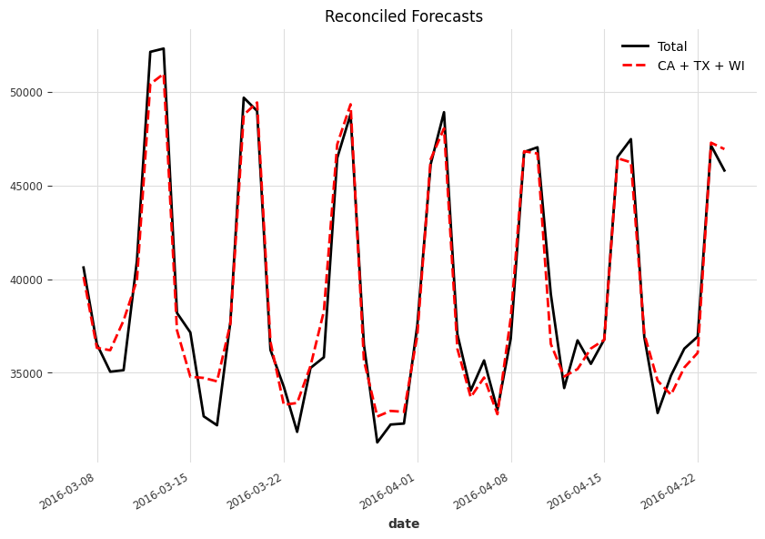
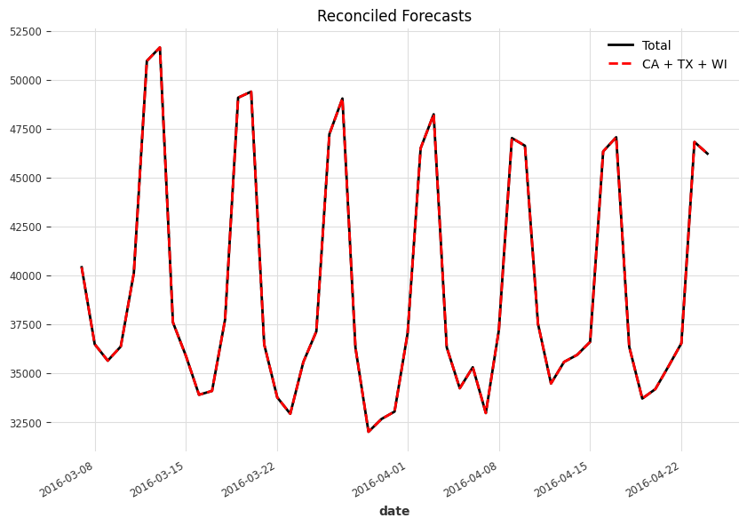
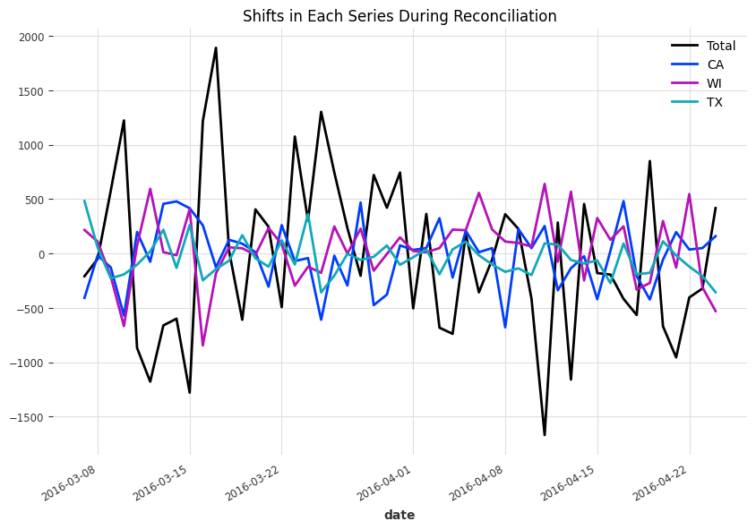

Hierarchical Time Series Reconciliation
Reconciliation is a post-processing method to adjust the forecasts to be coherent. Given base forecasts \(\hat{\mathbf y}(t)\) (forecasts for all levels but each level forecasted independently), we use \(\mathbf P\) to map them to the bottom-level forecasts
\(P\) and \(S\)
In the previous section, we discussed the summing matrix \(\color{blue}S\). The summing matrix maps the bottom-level forecasts \(\color{red}{\mathbf b}(t)\) to all forecasts on all levels \(\color{green}\mathbf y(t)\). The example we provided was
If we forecast different levels independently, the forecasts we get
are not necessarily coherent. However, if we can choose a proper \(\mathbf P\), we can convert the base forecasts into some bottom-level forecasts
From the usage, \(\mathbf S\) and \(\mathbf P\) are like conjugates. We have the following relation
It is clear that \(\mathbf P \mathbf S\) is identity if we set
However, this is not the only \(\mathbf P\) we can choose.
To generate the coherent forecasts \(\tilde{\mathbf y}(t)\), we use the summing matrix to map the bottom level forecasts to base forecasts of all levels12
Walmart Sales in Stores
We reuse the example of the Walmart sales data. The base forecasts for all levels are
The simplest mapping to the bottom-level forecasts is
where
are the bottom-level forecasts to be transformed into coherent forecasts.
In this simple method, our mapping matrix \(\mathbf P\) can be
Using this \(\mathbf P\), we get
The last step is to apply the summing matrix
so that
In summary, our coherent forecasts for each level are
The \(\mathbf P\) we used in this example represents the bottom-up method.
Results like \(\tilde s_\mathrm{CA}(t) = \hat s_\mathrm{CA}(t)\) look comfortable but they are not necessary. In other reconciliation methods, these relations might be broken, i.e., \(\tilde s_\mathrm{CA}(t) = \hat s_\mathrm{CA}(t)\) may not be true.
Component Form
We rewrite
using the component form
There is more than one \(\mathbf P\) that can map the forecasts to the bottom-level forecasts. Three of the so-called single-level approaches1 are bottom-up, top-down, and middle-out2.
Apart from these intuitive methods, Wickramasuriya et al. (2017) proposed the MinT method to find the optimal \(\mathbf P\) matrix that gives us the minimal trace of the covariance of the reconciled forecast error3,
with \(\mathbf y\) being the ground truth and \(\tilde{\mathbf y}\) being the coherent forecasts. Wickramasuriya et al. (2017) showed that the optimal \(\mathbf P\) is
where \(W_{h} = \mathbb E\left[ \tilde{\boldsymbol \epsilon} \tilde{\boldsymbol \epsilon}^T \right] = \mathbb E \left[ (\mathbf y(t) - \tilde{\mathbf y}(t))(\mathbf y(t) - \tilde{\mathbf y}(t))^T \right]\) is the covariance matrix of the reconciled forecast error.
\(\hat{\mathbf P} \neq \mathbf I\)
Note that \(\mathbf S\) is not a square matrix and we can't simply apply the inverse on each element,
MinT is easy to calculate but it assumes that the forecasts are unbiased. To relieve this constraint, Van Erven & Cugliari (2013) proposed a game-theoretic method called GTOP4. In deep learning, Rangapuram et al. (2021) developed an end-to-end model for coherent probabilistic hierarchical forecasts2. For these advanced topics, we redirect the readers to the original papers.
MinT Examples
Theories
To see how the MinT method works, we calculate a few examples based on equation \(\eqref{eq-mint-p}\). For simplicity, we assume that the variance \(\mathbf W\) is diagonal3. Note that the matrix \(\mathbf S \mathbf P\) decides how each original forecast is combined, \(\tilde{\mathbf y} = \mathbf S \mathbf P \hat{\mathbf y}\). It will be the key for us to understand how MinT works.
In the following examples, we observe that the lower variance of the reconciled forecast error \(W_{ii}\), the less change in the reconciled result. Since lower values of \(W_{ii}\) indicate lower reconciled forecast error, reconciliation should not adjust it by a lot.
For a 2-level hierarchical forecasting problem, the shape of the \(\mathbf S\) matrix is (3,2) and we have three values to pre-compute or assume, i.e., the diagonal elements of \(\mathbf W\).
| \(\mathbf S\) | \(\mathbf P\) | \(\mathbf S \mathbf P\) |
|---|---|---|
| \(\left[\begin{matrix}1 & 1\\1 & 0\\0 & 1\end{matrix}\right]\) | \(\left[\begin{matrix}\frac{- \frac{W_{2} W_{3}}{W_{1} + W_{2} + W_{3}} + \frac{W_{1} W_{2} + W_{2} W_{3}}{W_{1} + W_{2} + W_{3}}}{W_{1}} & \frac{W_{1} W_{2} + W_{2} W_{3}}{W_{2} \left(W_{1} + W_{2} + W_{3}\right)} & - \frac{W_{2}}{W_{1} + W_{2} + W_{3}}\\\frac{- \frac{W_{2} W_{3}}{W_{1} + W_{2} + W_{3}} + \frac{W_{1} W_{3} + W_{2} W_{3}}{W_{1} + W_{2} + W_{3}}}{W_{1}} & - \frac{W_{3}}{W_{1} + W_{2} + W_{3}} & \frac{W_{1} W_{3} + W_{2} W_{3}}{W_{3} \left(W_{1} + W_{2} + W_{3}\right)}\end{matrix}\right]\) | \(\left[\begin{matrix}\frac{- \frac{2 W_{2} W_{3}}{W_{1} + W_{2} + W_{3}} + \frac{W_{1} W_{2} + W_{2} W_{3}}{W_{1} + W_{2} + W_{3}} + \frac{W_{1} W_{3} + W_{2} W_{3}}{W_{1} + W_{2} + W_{3}}}{W_{1}} & \frac{- \frac{W_{2} W_{3}}{W_{1} + W_{2} + W_{3}} + \frac{W_{1} W_{2} + W_{2} W_{3}}{W_{1} + W_{2} + W_{3}}}{W_{2}} & \frac{- \frac{W_{2} W_{3}}{W_{1} + W_{2} + W_{3}} + \frac{W_{1} W_{3} + W_{2} W_{3}}{W_{1} + W_{2} + W_{3}}}{W_{3}}\\\frac{- \frac{W_{2} W_{3}}{W_{1} + W_{2} + W_{3}} + \frac{W_{1} W_{2} + W_{2} W_{3}}{W_{1} + W_{2} + W_{3}}}{W_{1}} & \frac{W_{1} W_{2} + W_{2} W_{3}}{W_{2} \left(W_{1} + W_{2} + W_{3}\right)} & - \frac{W_{2}}{W_{1} + W_{2} + W_{3}}\\\frac{- \frac{W_{2} W_{3}}{W_{1} + W_{2} + W_{3}} + \frac{W_{1} W_{3} + W_{2} W_{3}}{W_{1} + W_{2} + W_{3}}}{W_{1}} & - \frac{W_{3}}{W_{1} + W_{2} + W_{3}} & \frac{W_{1} W_{3} + W_{2} W_{3}}{W_{3} \left(W_{1} + W_{2} + W_{3}\right)}\end{matrix}\right]\) |
We visualize the matrix \(\mathbf S\mathbf P\). It is straightforward to verify that it always leads to coherent results.

import sympy as sp
import numpy as np
import seaborn as sns
class MinTMatrices:
def __init__(self, levels: int):
self.levels = levels
@property
def s(self):
s_ident_diag = np.diag([1] * (self.levels - 1)).tolist()
return sp.Matrix(
[
[1] * (self.levels - 1),
] + s_ident_diag
)
@property
def w_diag_elements(self):
return tuple(
sp.Symbol(f"W_{i}")
for i in range(1, self.levels + 1)
)
@property
def w(self):
return sp.Matrix(np.diag(self.w_diag_elements).tolist())
@property
def p_left(self):
return sp.Inverse(
sp.MatMul(sp.Transpose(self.s), sp.Inverse(self.w), self.s)
)
@property
def p_right(self):
return (
sp.MatMul(sp.Transpose(self.s), sp.Inverse(self.w))
)
@property
def p(self):
return sp.MatMul(self.p_left, self.p_right)
@property
def s_p(self):
return sp.MatMul(self.s, self.p)
@property
def s_p_numerical(self):
return sp.lambdify(
self.w_diag_elements,
self.s_p
)
def visualize_s_p(self, w_elements, ax):
sns.heatmap(self.s_p_numerical(*w_elements), annot=True, cbar=False, ax=ax)
ax.grid(False)
ax.set(xticklabels=[], yticklabels=[])
ax.tick_params(bottom=False, left=False)
ax.set_title(f"$W_{{diag}} = {w_elements}$")
return ax
mtm_3 = MinTMatrices(levels=3)
print(
f"s: {sp.latex(mtm_3.s)}\n"
f"p: {sp.latex(mtm_3.p.as_explicit())}\n"
f"s_p: {sp.latex(mtm_3.s_p.as_explicit())}\n"
)
# 2 bottom series, in total three series
mtm_3.s
mtm_3.p
mtm_3.s_p.as_explicit()
w_elements = [
(1,1,1),
(2,1,1)
]
fig, axes = plt.subplots(nrows = 1, ncols=2, figsize=(4 * 2, 4))
for idx, w in enumerate(w_elements):
mtm_3.visualize_s_p(w, axes[idx])
fig.show()
Implementations
There are different methods to get the covariance matrix \(\mathbf W\). We discuss a few examples and their implications.
| method | \(\mathbf W\) | Note |
|---|---|---|
| OLS | \(\mathbf I\) | More weight on the higher levels in the hierarchy |
| Structual Scaling | \(\operatorname{diag}(\mathbf S \mathbf I)\) | Less weight on higher levels compared to OLS |
Real-world Data
Code
The code for this subsection can be found in this notebook (also available on Google Colab).
We use a small subset of the M5 competition data to show that MinT works by shifting the values on different hierarchies.
| date | CA | TX | WI | CA_1 | CA_2 | CA_3 | CA_4 | TX_1 | TX_2 | TX_3 | WI_1 | WI_2 | WI_3 | Total |
|---|---|---|---|---|---|---|---|---|---|---|---|---|---|---|
| 2011-01-29 00:00:00 | 14195 | 9438 | 8998 | 4337 | 3494 | 4739 | 1625 | 2556 | 3852 | 3030 | 2704 | 2256 | 4038 | 32631 |
| 2011-01-30 00:00:00 | 13805 | 9630 | 8314 | 4155 | 3046 | 4827 | 1777 | 2687 | 3937 | 3006 | 2194 | 1922 | 4198 | 31749 |
| 2011-01-31 00:00:00 | 10108 | 6778 | 6897 | 2816 | 2121 | 3785 | 1386 | 1822 | 2731 | 2225 | 1562 | 2018 | 3317 | 23783 |
| 2011-02-01 00:00:00 | 11047 | 7381 | 6984 | 3051 | 2324 | 4232 | 1440 | 2258 | 2954 | 2169 | 1251 | 2522 | 3211 | 25412 |
| 2011-02-02 00:00:00 | 9925 | 5912 | 3309 | 2630 | 1942 | 3817 | 1536 | 1694 | 2492 | 1726 | 2 | 1175 | 2132 | 19146 |
We apply a simple LightGBM model using Darts. The forecasts are not coherent.

Applying MinT method, we reached coherent forecasts for all levels. The following charts shows the example for the top two levels.

Each step was adjusted differently since the forecasted values are different. To see how exactly the forecasted are adjusted to reach coherency, we plot out the difference between the reconciled results and the original forecasts, \(\tilde{\mathbf y} - \hat{\mathbf y}\).

Tools and Packages
Darts and hierarchicalforecast from Nixtla provide good support for reconciliations.
-
Hyndman, R.J., & Athanasopoulos, G. (2021) Forecasting: principles and practice, 3rd edition, OTexts: Melbourne, Australia. OTexts.com/fpp3. Accessed on 2022-11-27. ↩↩
-
Rangapuram SS, Werner LD, Benidis K, Mercado P, Gasthaus J, Januschowski T. [End-to-End ↩↩↩
-
Wickramasuriya SL, Athanasopoulos G, Hyndman RJ. Optimal forecast reconciliation for hierarchical and grouped time series through trace minimization. Journal of the American Statistical Association 2019; 114: 804819. ↩↩
-
Erven T van, Cugliari J. Game-Theoretically optimal reconciliation of contemporaneous hierarchical time series forecasts. In: Modeling and stochastic learning for forecasting in high dimensions. Springer International Publishing, 2015, pp 297317. ↩